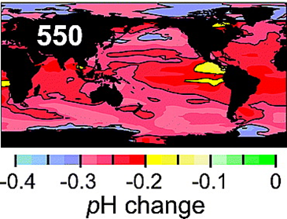
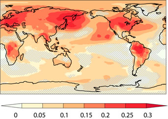
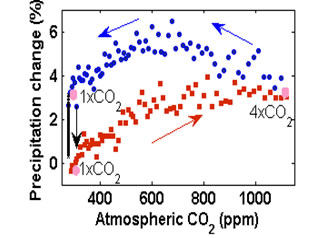

- • 翟国庆： 教授， 天气灾害机理及预测与预报
-
|
翟国庆 教授
E-mail : zhaigq@zju.edu.cn
男，1954年10月1日生，教授，博士生导师。浙江大学理学部党委书记兼学部副主任，兼中国气象学会理事、浙江省气象学会副理事长、杭州市气象学会副理事长、中国天气委员会委员、气象教育与培训委员会委员、国家教育部大气科学教学指导委员会委员、浙江省地理与环境教学指导委员会秘书长等职。主要研究方向有：中尺度气象数值模拟；天气分析与物理诊断；灾害性天气发生机理与预报方法等。
讲授过研究生学位课程《高等天气学》、本科生课程《天气分析与预报》、《雷达气象学》、《灾害气象学》等。
|
先后参加国家“九五”重中之重“我国短期气候预测系统的研究”课题、国家基金重点项目“中尺度天气和动力学研究”、国家科技攻关“海上大风数值预报模拟试验”等研究项目；主持多项国家自然科学基金、省自然科学基金、灾害天气国家重点实验室开放课题重点项目等。主要利用中尺度气象数值预报MM5模式和WRF模式，从事长江中下游地区和我国东部沿海地区的洪涝、暴雨、台风等灾害性天气的物理机制和预报方法的研究。针对我国东部梅雨期的暴雨及登陆台风暴雨过程，在分析研究暴雨发生发展和演变机理已取得一些研究成果。分析了我国梅雨暴雨中的一些中小尺度的小扰动现象和发生机制。在气象中尺度模式的应用上，利用气象卫星、雷达等不同气象资料的同化试验和利用多种敏感性的物理试验，揭示中尺度地形、高层大气风场、下垫面水汽和热量通量等对中尺度灾害天气的影响与作用以及风场之间的相互关系及对中尺度气象系统的触发作用得到了一些有意义的研究成果。合作发表六十余篇学术论文。
|
例如：针对台风螺旋云带中出现的中尺度现象，将多种非常规观测资料同化于中尺度数值模拟中，获得了与实况一致的效果（图为模拟积分24小时的流场、散度场合实况1小时降水）。图中揭示了台风螺旋雨带形成过程和机理特征，已发表5篇相关论文。
同样，针对长江下游地区经常出现的中小尺度扰动涡旋，通过同化试验，模拟有效的将中小尺度涡旋与实况雷达的叠加，获得一致的模拟效果，即在扰动涡旋的中心有较强的回波出现（图中为模拟流场和实况雷达回波），首次展示了国内弱小扰动再现的过程。
|
近几年发表论文有：
（1）ZHAI Guo-qing, ZHOU Ling-li，Analysis of weak small-scale vortexes group in the planetary boundary layer in the Meiyu front，ADVANCES IN ATMOSPHERIC SCIENCES,2007，vol.24,No.3,399-408（SCI）
（2）ZHOU Lingli，ZHAI Guoqing;Numerical Study of the Mesoscale Systems in the Spiral Rainband of 0509 Typhoon Matsa, Adv. Atmos. Sci., VOL.28,NO.1,2011,118-128（SCI）.
(3)Jinfang Yin,Donghai Wang,Guoqing Zhai;Long-term in situ measurements of the cloud-Precipitati-on microphysical properties over East Asia;Atmospheric Research 102 (2011) 206–217(SCI)
（4）何斌、翟国庆等，云迹风资料同化对东亚海域风场数值模拟的影响，海洋学报，2007，Vol.29,No.6,23-32
（5）周玲丽、翟国庆等，0505号“海棠”台风暴雨数值模拟试验和分析. 大气科学, 2009，vol.33，No.3，489-500
（6）沈杭锋,翟国庆;浙江沿海中尺度辐合线对飑线发展影响的数值试验,大气科学，2010，Vol.34，NO.6，1127-1140
（7）徐亚钦,翟国庆;基于雷达和自动站资料研究风暴演变规律,大气科学，2011，Vol.35，NO.1，,134-146
（8）周玲丽，翟国庆，王东海，王元. 0713号“韦帕”台风暴雨的中尺度数值研究和非对称性结构分析. 大气科学，2011，35（6）：1046-1056
（9）徐亚钦，翟国庆等，基于TREC法以多重动态区域反演风场，浙 江 大 学 学 报（工学版），2011，45（10），1738-1745（EI）
（10）刘瑞、翟国庆等，FY-2C云迹风资料同化应用对台风预报的影响试验研究,大气科学，2012,36(2),350-360
|
- • 曹龙： 教授，首批国家青年千人计划入选者。 全球气候变化、碳循环和地球系统模拟
-
|
曹龙 教授
E-mail : longao@zju.edu.cn
个人主页：http://mypage.zju.edu.cn/longcao
男，1976年2月生，浙江大学地球科学系教授，博士生导师。浙江大学气象信息与预测研究所所长。国家首批青年千人计划入选者、国际SCI期刊Climatic Change 执行编辑。在Proceedings of the National Academy of Sciences, Geophysical Research Letters, Biogeosciences, Journal of Geophysical Research 等国际期刊上发表论文20余篇。
|
主要研究方向： 全球气候变化； 全球碳循环； 海洋酸化； 地球系统模拟。
|
|
研究亮点示例：
1.海洋碳循环和海洋酸化：人类活动排放的二氧化碳被海洋吸收后，与海水相互作用形成碳酸，增强海水的酸性。这种过程被称为海洋酸化。海洋酸化对海洋生态系统有着深远的影响。

大气中二氧化碳加倍情况下海洋表面pH值的变化。选自：Cao, L. , and K. Caldeira (2008), Atmospheric CO2 stabilization and ocean acidification, Geophysical. Research. Letters doi:10.1029/2008GL035072
|
2.陆地和大气的相互作用：大气中二氧化碳浓度增加一方面通过温室效应使地表增温，另一方面，二氧化碳浓度的增加还会通过植被的反馈作用使地表进一步增温。

在大气中二氧化碳加倍情况下，由于植被作用产生的地表增温占二氧化碳总增温作用（温室作用+植被作用）的比率。选自：Cao, L., , G. Bala, K. Caldeira, R. Nemani, and G. Ban-Weiss (2010), Importance of carbon dioxide physiological forcing to future climate change, Proceedings of the National Academy of Sciences, DOI 10.1073/pnas.0913000107.
|
3.大气动力系统对二氧化碳含量变化的响应：温度降水等气候要素对大气中二氧化碳浓度变化的响应是一个复杂的动力过程。

同一个二氧化碳浓度对应于两个不同的降水变化。选自：Cao, L., , G. Bala, and K. Caldeira (2011), Why is there a short-term increase in global precipitation in response to diminished CO2 forcing? Geophysical Research Letters doi:10.1029/2011GL046713. |
|
- • 汤燕冰：副教授， 持续性降水的机理分析
-
汤燕冰 副教授
担任“大气物理学”、“统计气象学”以及“气候物理学”等大气科学本科生和气象学研究生课程的教学工作。
|
研究方向：1）大型高影响事件的形成机制；2）统计降尺度技术及其在天气和气候分析中的应用；3）GIS在气象气候学领域的的应用。
|
大型高影响事件的形成过程是发生于天气与气候之间的中间尺度上的过程。天气与气候之间的联系是大气科学领域的研究热点之一。气候变化如何影响天气现象？天气现象如何影响气候变化？跨接这两种不同时间尺度的关键现象和机制是什么?弄清这些问题是提高大型高影响极端事件预报水平的关键。近年来，本人的科研工作主要围绕上述问题进行的，重点研究对象为发生在我国东部的持续性暴雨过程。先后主持两项国家自然科学基金面上项目，已获得一些有意义的结果。
1.Tang，Y., J. Gan, L Zhao and K. Gao, 2006: On climatology of persistent heavy rainfall events over China. Adv. Atmos. Sci., 23(5), 678-692. (SCI)
2.Tang，Y., L. Zhao and K. Gao, 2009: Correlation analysis of persistent heavy rainfall events in the vicinity of the Yangtze River valley and global outgoing longwave radiation in the preceding month, Adv. Atmos. Sci.,26(6), 1169-1180. (SCI)
|
- • 贾晓静：副教授， 短期气候预报
-
|
贾晓静 副教授
E-MAIL: xiaojing.jia@gmail.com
通信：浙江省杭州市，浙江大学地球科学系
邮编：310027
女，浙江大学地球科学系副教授，副博士生导师。1998年-2001年，在中国气象科学研究院作为硕士研究生学习，气候专业。2002年-2007年，在加拿大McGill大学大气海洋系进行博士学习，专业是气候动力学。2007年4月-2008年8月，在加拿大McGill大学做博士后工作。2008年11月-至今，在浙江大学地球科学系工作。主要研究方向包括：中短期季节预报,全球气候变化，海气相互作用等。在国内外学术刊物上发表论文十余篇。2011年获得谢义炳青年气象科技奖。
|
主要论文:
* XiaoJing Jia，Hai Lin，June-Yi Lee and Bin Wang,2012, Season-dependent forecast skill of the leading forced atmospheric circulation pattern over the North Pacific and North American region. Journal of Climate, doi: 10.1175/JCLI-D-11-00522.1.（SCI）
* XiaoJing Jia and Hai Lin，2010, Influence of forced large-scale atmospheric patterns on surface air temperature in China. Monthly Weather Review, 139（3），830-852.（SCI）
* XiaoJing Jia and PeiJun Zhu，2010, Improving seasonal forecast skill of summer precipitation in China using a dynamical-statistical approach. Atmospheric and Oceanic Science Letters, 3(2):100-105.
* XiaoJing Jia, Hai Lin and Jacques Derome，2009, Improving seasonal forecast skill of North American surface air temperature in fall using a post-processing method, Monthly Weather Review., Vol.138, No5,1843-1857.
* XiaoJing Jia, Hai Lin and Jacques Derome, 2009, The influence of tropical Pacific forcing on the Arctic Oscillation, Climate Dynamics, 32，495-509.
* XiaoJing Jia, Jacques Derome and Hai Lin, 2007, Comparison of the life cycle of the NAO using different definitions, Journal of Climate, 20: 5992-6011.
* 封国林, 董文杰, 贾晓静, 2004, Application of retrospective time integration scheme to the prediction of torrential rain. Chinese Physics, 13 (3): 413-422.
* 贾晓静, 封国林, 曹鸿兴, 2003, 中尺度自忆模式在强降水预报中的应用. 大气科学, 27 (2), 65-272.
* 贾晓静, 曹鸿兴, 封国林, 2002, 一种动态数据的新建模法及其预报应用. 应用气象学报, 13 (1), 96-101.
* 封国林, 董文杰, 贾晓静, 2002, 海-气振荡子中的极限环解. 物理学报, 51 (6), 1181-1185.
|
• 朱佩君：副教授， 灾害性天气数值模拟分析
• 谭季青：副教授， 远距离输送的动力学研究
• 田荣湘：副教授， 气候与环境研究
• 徐亚梅：副教授，灾害性天气的动力学研究
• 刘瑞：实验员，中尺度数值模拟与实验室管理
|